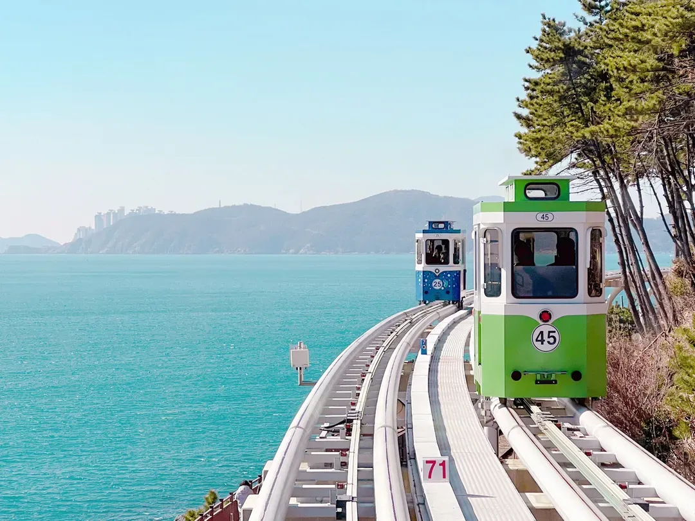
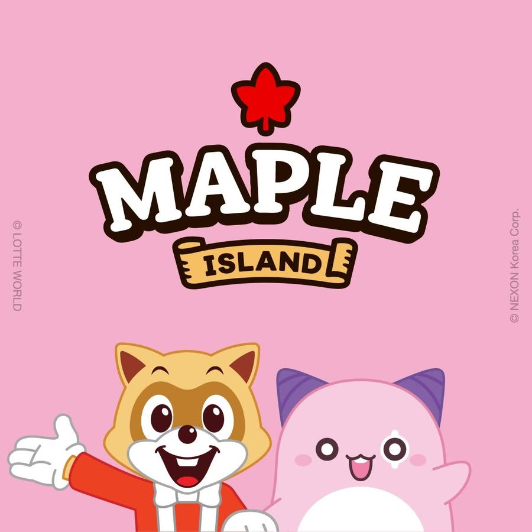
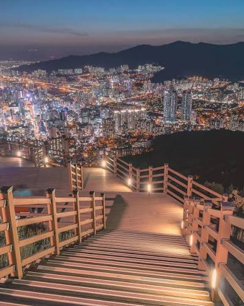
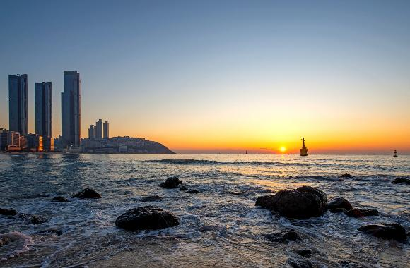
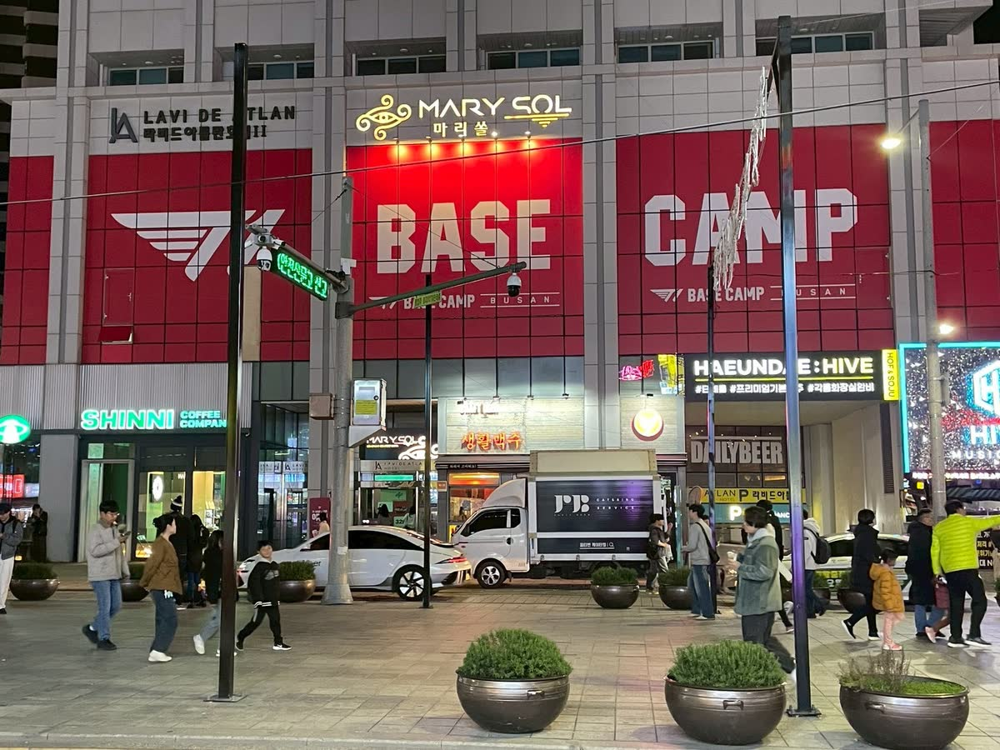
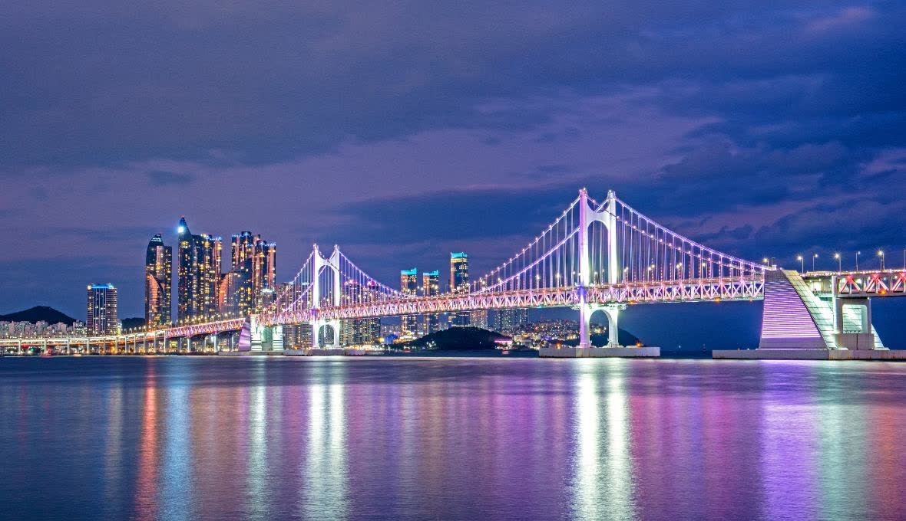
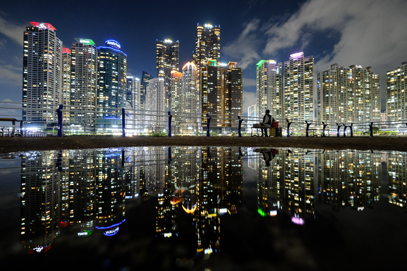
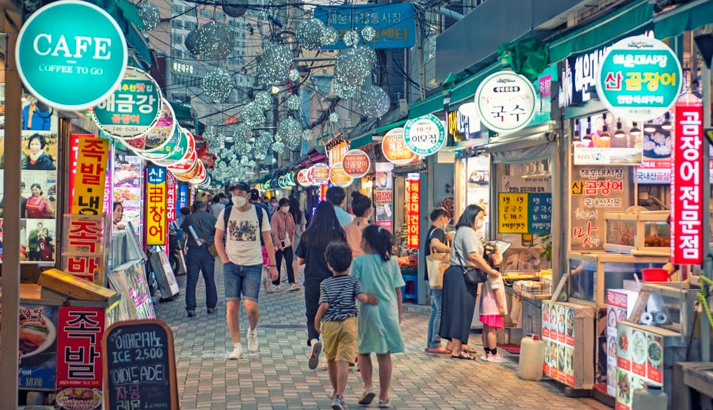
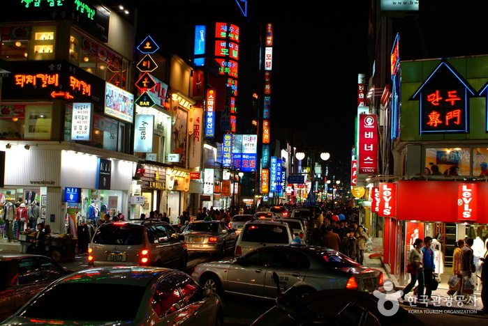

Day 2 ‧ 上午
天空膠囊列車스카이캡슐
四人一艙的糖果色車廂，架在廢棄鐵道上以步行速度貼著海岸線走 2 公里。務必線上預約。
2026 楓葉季 ‧ 五天四夜
十一月的釜山正在轉紅。以 海雲台海灘 為家，往東兩站就是楓之谷主題的樂天樂園，往西是廣安里的豬腳與荒嶺山的萬家燈火。整趟行程照「住在沙灘旁」這個前提排過。
Highlights
從沙灘走得到的電競基地，到海拔 427 公尺的全景夜色——六個你清單上的願望，已經排進對應的日子裡。

四人一艙的糖果色車廂，架在廢棄鐵道上以步行速度貼著海岸線走 2 公里。務必線上預約。

釜山唯一的大型主題樂園，整園區正在跑楓之谷聯名季。從海雲台東海線兩站、12 分鐘。

海拔 427 公尺的烽火台，360 度看完廣安大橋、海雲台、釜山港。24 小時免費，夕陽接夜景。

1.5 公里白沙、朝東南，太陽直接從海面升起。日出約 07:00，下樓就到——這是住沙灘旁最大的紅利。

T1 官方基地二號店，就在海雲台 Marisol Hotel 二樓。頂規 PC 區、周邊店，還有全韓第一間 T1 PUB。

Day 4 的收尾。回海雲台路上順路下車，7.4 公里長的廣安大橋整座打燈，沙灘後面整排炸雞啤酒還亮著。

釜山夜景明信片的那一張：水面倒映整排 Marine City 的燈。炸魚薯條配啤酒，大家就坐在岸邊地上吃。

離海灘幾分鐘的老市場小吃街。豬肉湯飯、豬腳、烤盲鰻、糖餅，站著吃、一攤一樣。

釜山最大的商圈，1、2 號線交會。接在田浦咖啡街之後，逛街、拍貼、Olive Young 都在這一帶。
Itinerary
住海雲台的通則：往東（東釜山）很近，往西（西面、機場）要算時間。整份行程都照這個前提排。
落地已經是晚上，能動的時間不多，而且全部在飯店走得到的範圍內。今晚只有三件事：放下行李、逛海雲台大街、吃到第一碗豬肉湯飯，最後散步去看夜裡的海水浴場。累了就少走一段，沒關係。
17:05 高雄小港起飛。國際線報到加安檢抓兩小時，15:00 前到機場就很從容。
20:35 金海國際機場落地。入境審查＋提行李大概要半小時到一小時，出關通常是九點多。
金海機場在釜山最西邊、海雲台在最東邊，是全市最長的一段對角線。機場巴士末班約 21:00 前後、這班飛機趕不上，大眾運輸要轉三段近 75 分鐘——帶著行李就是直接叫車，沒有別的選項。
Check-in、放下行李。換雙好走的鞋再出門。
從海雲台站一路通到沙灘的行人徒步大街，是海雲台的主動脈：兩側餐廳、炸雞店、咖啡廳、藥妝店全部開著，中央廣場常有街頭表演。整條都是平路、燈很亮，第一晚拿來認路剛剛好——明天白天還會再走一次。
豬肉湯飯是釜山的靈魂食物——豬骨熬到乳白的湯、一碗飯、一碟蝦醬，深夜吃最對。海雲台大街和市場一帶有好幾家 24 小時營業，不必挑，哪家亮著就進去。
從大街底端直接走進沙灘，住這裡的第一個紅利。深夜的海灘幾乎沒人，背後是 Marine City 整面發光的玻璃大樓牆，左手邊遠處看得到廣安大橋的燈。浪聲很大、風很涼，走一段再回飯店，第一天就結束得很漂亮。
第一個完整的日子，而且幾乎不用搭地鐵——全部在步行或一趟計程車的範圍內。昨晚走過的海雲台大街，今天白天再走一次；因為住在沙灘旁，早上和晚上各賺一段海。
11 月中海雲台日出約 07:00。沙灘 1.5 公里長、朝東南，太陽直接從海面升起。這個時間沙灘上只有晨跑的當地人和海鷗，下樓就到，別睡掉。
飯店 → 青沙浦（청사포），計程車約 10 分、₩5,000 上下。
Blueline Park 的招牌。四人一艙的糖果色小車廂，架高在廢棄的東海南部線舊鐵道上，以接近步行的速度貼著海岸線前進。單程約 2 公里、30 分鐘，全程只有你們這一艙的人跟一整面海。
膠囊列車的終點尾浦（미포）走幾分鐘就到。這是海雲台 LCT 地標塔的 98～100 樓觀景台，塔高 411.6 公尺、韓國第二高，也是全韓規模最大的展望台。上午上去能見度最好：海雲台整片沙灘、廣安大橋、釜山港大橋、二妓台、冬柏島一次收進眼底——等於先把今天接下來要走的地方從空中看過一遍。
和膠囊列車同園區、不同系統的平面觀景列車，沿尾浦—青沙浦—松亭跑，座位全部面海、落地窗。站站可以下車再上車，是今天在海岸線之間移動的主要工具。可與膠囊列車買套票。
白天的海雲台大街（구남로）和昨晚完全兩個樣子：店全開了、街頭藝人在中央廣場表演。走到底轉進海雲台市場吃午餐——豬肉湯飯、現切生魚片、糖餅（호떡）、米腸（순대）、辣炒年糕，站著吃、一攤一樣，比坐下來點一桌有趣。
釜山的門面，1.5 公里白沙。11 月不能下水，但人少、光線斜、沙灘超好拍。買一包蝦味先站在沙灘上，海鷗會整群圍過來——這是海雲台的固定節目。
韓國電競王朝 T1 的官方品牌基地二號店（一號店在首爾弘大），就開在海雲台 Marisol Hotel 二樓，從沙灘走過去幾分鐘。裡面有頂規電競 PC 區、官方周邊商店、小型電競賽場、拍照亭，還有全韓國第一間 T1 PUB——供應選手的招牌餐點和 T1 聯名飲品。
海雲台沙灘西端的小半島，環島木棧步道一圈約 1.2 公里、平路好走。走到南側崖邊，可以把廣安大橋和 Marine City 的玻璃大樓群框進同一張照片。17:20 日落剛好在這裡。
冬柏島旁的遊艇碼頭，釜山夜景明信片的那張就是在這裡拍的：前方廣場的淺水池倒影 ＋ 後方 Marine City 整片亮燈的大樓牆。現場有炸魚薯條和啤酒，大家端著坐在岸邊地上吃。水池要沒風才有倒影，風大就往碼頭邊走。
海雲台站到沙灘之間整條都是餐廳。吃完走回飯店，今天不必算末班車——這是住海雲台最實在的好處。
回飯店的路上順手逛。海雲台大街（구남로）上就有分店，規模比西面小，但人也少很多、好挑好試。今晚先把想買的牌子摸過一輪、記下價錢，Day 4 到西面再一次掃貨最有效率——遇到喜歡又剛好 1+1 的就直接下手。
東釜山玩樂日。斜坡滑車和樂天世界都在東海線上，海雲台出發往北，先在기장站玩滑車，再退回오시리아站進樂園——上午放電、下午進楓之谷，一條線上兩站搞定。
海雲台站搭 東海線（동해선）往北 → 기장站，約 20 分。東海線和地鐵 2 號線是不同系統、同站可轉乘，班距較長（15–30 分），出門前先查發車時間。
紐西蘭來的重力滑車。先搭吊椅（Skyride）升到山頂，沿途就是海景；再坐上三輪小車，自己控制把手煞車滑下來——往前推是加速、往後拉是煞車，不用踩任何踏板。全場四條賽道、總長 2.4 公里，從最緩的新手道到最彎的進階道都有。刺激但不會太可怕，不會開車的人也能玩。
滑完車往樂園方向移動，順路吃午餐。機張（기장）是松葉蟹的產地，想吃海鮮在這裡解決；或是坐東海線到오시리아站，在新世界 Premium Outlet 的餐廳區吃、順便吹暖氣休息。
기장站搭 東海線往南 → 오시리아站，一站、約 5 分。樂天世界就在車站旁。
2022 年開幕，釜山唯一的大型主題樂園，六個主題園區沿著山谷展開，招牌是木質雲霄飛車 Giant Digger。這季整個園區都在跑 Nexon 聯名的 「MapleStory in LOTTE WORLD BUSAN」秋季檔期（到 11/22）。
下午三點左右進場，平日開到 20:00，還有五個小時——而且這個時段剛好有一張便宜很多的票。
楓之谷：Dance Together! 댄스 투게더 — 加了新怪物舞者的聯名遊行，全園最大場的表演，提早去站第一排
蘑菇城堡 Garden Stage 버섯의 성 — 掃 QR 自選髮型與服裝，做好的角色會跳上舞台的數位螢幕
粉紅豆拍照時間 핑크빈 포토타임 — 固定時段出沒，另有粉紅豆 Greeting Band 與楓之谷街頭演出
閉園後東海線回海雲台，12 分鐘就到家——這是住海雲台今天最大的好處。晚餐可以回구남로上解決。
A 版：逛街、咖啡、拍照、夜景。路線剛好是 2 號線上的一條直線——田浦 → 西面 → 廣安里 → 回海雲台，一路往東，不走回頭路。今天只有一件事要看天色：想同時看到夕陽和夜景，就在日落前一小時左右上荒嶺山（十一月日落約 17:20）。
海雲台站搭 2 號線往서면方向 → 田浦站（전포），約 30 分。
釜山咖啡廳密度最高的一區。這裡本來是賣工具機具的「工具街」（공구거리），老鐵工廠一間間被改成咖啡廳，招牌還留著當年的樣子，2017 年被紐約時報選進「年度必訪 52 個地方」之後就紅了。
韓國年輕人現在最流行的自助拍照店。和傳統拍貼不同的是，拍出來的四格照片會動——機器錄下幾秒影片，現場印出紙本、同時給你一支可以存手機的動圖。四個人擠進去一起拍剛剛好。
從田浦走過去或搭一站就到。西面是釜山最大的商圈，地鐵 1、2 號線在這裡交會，樂天百貨、Judies 太華（쥬디스태화）、西面一號街和整片地下街擠在一起，一個下午走不完。
看看天色差不多了，從西面搭計程車上山，約 15 分、₩8,000 上下。目的地一定要說「황령산 전망쉼터」（荒嶺山展望休憩所）——只說「황령산」會被放在登山口，得多走半小時。
海拔 427 公尺，一座朝鮮時代的烽火台立在釜山正中央的山頂上，360 度無遮蔽：廣安大橋、海雲台、西面市區、釜山港一次看完。這是全市看釜山全景最好的位置，而且24 小時免費開放，不必趕關門。
計程車下山回西面，約 15 分。山上有時叫不到車——上山時留司機電話，或請咖啡廳幫忙叫，別打算走下山（山路彎又暗）。
豬頸肉（목살／松阪豬）是整頭豬油花最漂亮的部位，先用醬油基底醃過再上炭火，邊緣焦糖化、裡面還是嫩的。釜山的烤肉店多半全程由店員代烤，你只要負責包生菜。以下三家都在西面站步行範圍內，當天看排隊決定：
固定點 고정점 — 西面站旁的人氣店，醬烤豬肉與烤豬皮，專人代烤後直接端上桌
豬樹之愛 돼지나무 사랑걸렸네 — 西面站 12 號出口步行 5 分；豬肉每日限量進貨、耗時熟成醃漬，招牌是大蔥海鷗肉
味贊王鹽烤肉 西面店 맛찬들 — 主打 3.5 公分厚切五花與松阪豬頸肉，服務人員代烤
西面有好幾家分店，多數開到 22:30，所以放在吃飽之後——先買就得扛著戰利品上荒嶺山，很不划算。Day 2 在海雲台已經先看過一輪，這裡貨色最齊，可以放心一次買足。
回海雲台的路上剛好經過廣安站，下車走五分鐘就是海灘。廣安里是釜山人自己的海邊，7.4 公里長的廣安大橋橫在眼前、整座打著燈，沙灘後面整排炸雞啤酒（치맥）店還亮著。今天最後一站，走一段沙灘再回家。
14:05 的班機，櫃檯要在 12:05 前報到；海雲台到金海機場要抓 50~60 分鐘，所以上午十點半前後出門最保險。今天能用的只有早上——這是住海灘唯一的代價，但換來最後一次看海。
行李打包好再下樓。早上的沙灘最乾淨，走到冬柏島方向再折回剛好一小時。
最後一碗豬肉湯飯，或市場的現做糖餅。
Olive Young 海雲台店多在 10:00 開門，時間很緊。真正的伴手禮在超市：蜂蜜奶油杏仁、辣雞麵、燒酒、海苔。要是 Day 4 在西面買齊了，這段就留給打包。
海雲台到機場是穿越整個釜山的對角線。計程車 50~60 分 ‧ 約 ₩35,000~45,000；大眾運輸要 75 分以上、還要扛行李轉三次。有行李就叫車。平日早上市區會塞，10:30 出門是含緩衝的時間。
抵達金海機場國際線航廈，報到、託運、退稅。櫃檯最晚 12:05 前要報到，剩下的時間逛免稅店。
14:05 起飛 ‧ 16:05 抵達高雄小港。
Food
廣安里的民樂水邊公園吃兩家，晚上到西面吃第三家。三家都在同一條軸線上，不用來回跑。
족발（醬滷豬腳）配 보쌈（白切肉包生菜）的下酒雙拼。豬腳帶膠質、冷熱都好吃；包飯用生菜＋辣蘿蔔絲＋蝦醬一口捲起來。
招牌是豬頸肉湯飯（항정국밥），用油花細的松阪部位，軟嫩不腥，對不習慣內臟湯頭的人最友善。自己加蝦醬和韭菜才是本地吃法。
整頭豬油花最漂亮的部位，醬油基底醃過再上炭火，邊緣焦糖化、裡面還是嫩的。釜山店家多半全程代烤，你只要包生菜。
Before you fly
勾選會留在這個頁面上，兩個人打開看到的是同一份。
Checklist
0 / 10本機記錄
Shopping
因為住海雲台，Day 4 晚上的西面是主戰場。海雲台也有分店，但規模與品項較小，適合補漏。
Olive Young 單筆滿 ₩30,000，結帳時出示護照就當場退，不必在機場排隊。分開結帳會各自計算，想退稅就一次結。
一是標 1+1 / 2+1 的要拿滿才划算；二是買完先回房整理，別提著大包小包上荒嶺山。
Getting around
住海雲台的通則：往東（東釜山）很近，往西（西面、機場）要算時間。海雲台站同時有地鐵 2 號線與東海線，分屬不同系統。
| 去哪 | 怎麼走 | 時間 | 費用 |
|---|---|---|---|
| 金海機場 | 計程車（有行李強烈建議） | 50–60 分 | ₩35,000–45,000 |
| 金海機場 | 2 號線 → 沙上 → 金海輕軌 | 75 分 + | ₩1,900 |
| 오시리아（樂天世界） | 東海線往北 2 站 | 12 分 | ₩1,400 |
| 기장（斜坡滑車） | 東海線往北 3 站 | 20 分 | ₩1,500 |
| BUSAN X the SKY | 走路（尾浦／海雲台沙灘東端） | 步行 | — |
| 田浦咖啡街 | 2 號線往서면方向 → 전포站 | 30 分 | ₩1,600 |
| 青沙浦 | 計程車（或海邊列車） | 10 分 | 約 ₩5,000 |
| 廣安里／金蓮山 | 2 號線往서면方向 | 20 分 | ₩1,500 |
| 荒嶺山展望台 | 2 號線 → 금련산站 6 號出口 → 計程車 | 20＋10 分 | ₩1,500＋₩7,000 |
| 西面 | 2 號線直達 | 35 分 | ₩1,600 |
| 西面（深夜） | 計程車 | 30 分 | 約 ₩18,000 |
Plan B